HAATH [2023]
I designed, styled, edited, and modeled in this spread for my school's fashion magazine, Infinite Magazine Issue XI. The
goal of the spread was to bring to light the beauty and intimacy of the everyday as a South Asian.
Most mainstream South Asian representation shapeshifts between large weddings, flashy bridalwear, or post-colonial South Asia. This spread explores the delicate intricacies of community, fashion, and environment strung together by the thread of haath, or hands.
Thank you to Eesha Banerjee for co-leading this spread with me. Edited in Lightroom and Photoshop.
Most mainstream South Asian representation shapeshifts between large weddings, flashy bridalwear, or post-colonial South Asia. This spread explores the delicate intricacies of community, fashion, and environment strung together by the thread of haath, or hands.
Thank you to Eesha Banerjee for co-leading this spread with me. Edited in Lightroom and Photoshop.
 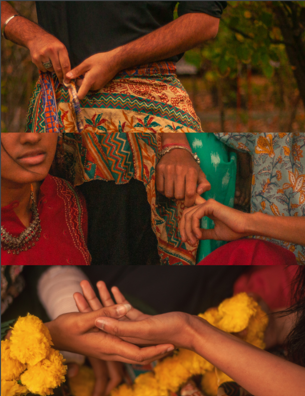
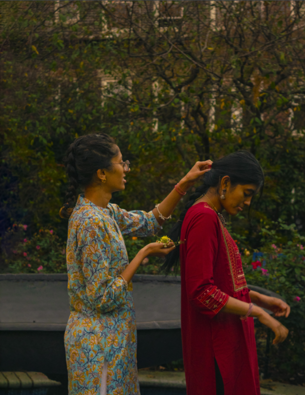
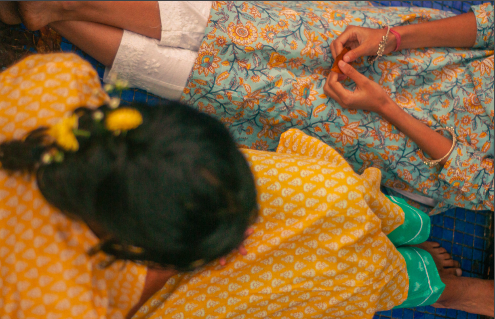
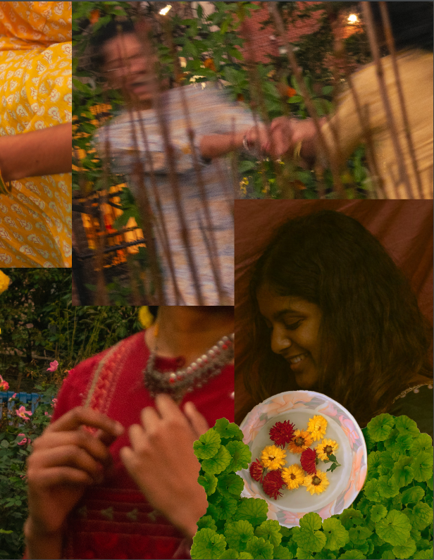
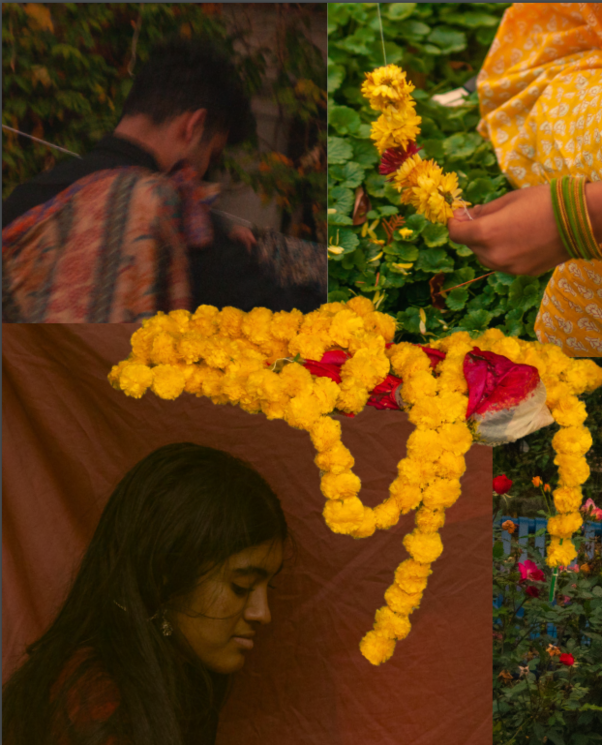
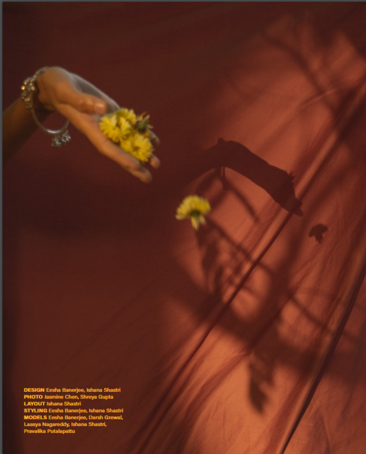
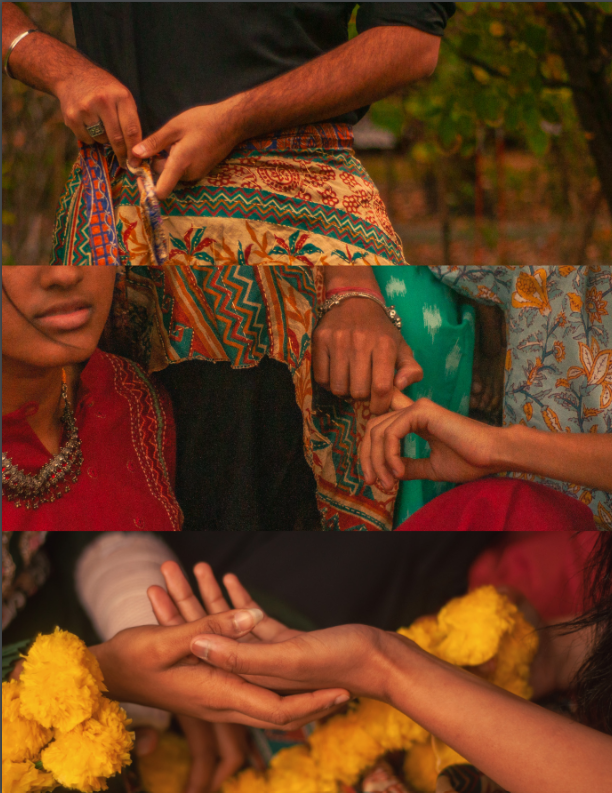
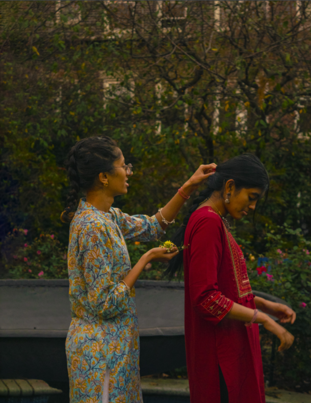
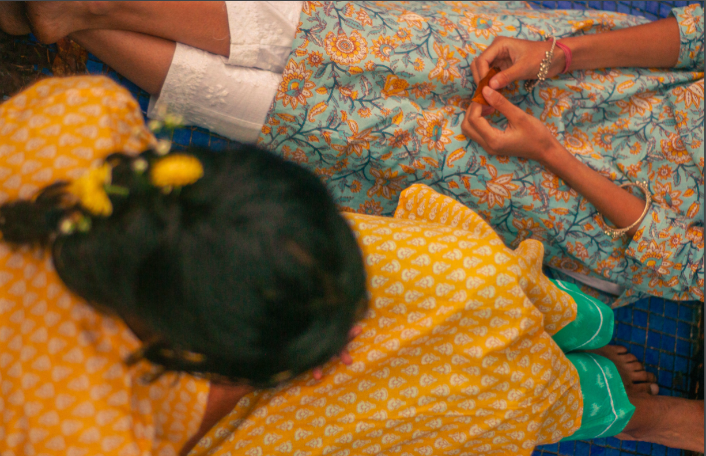
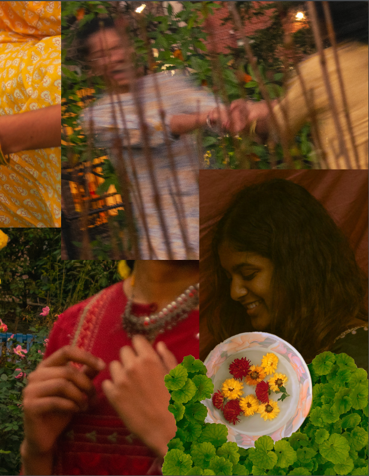
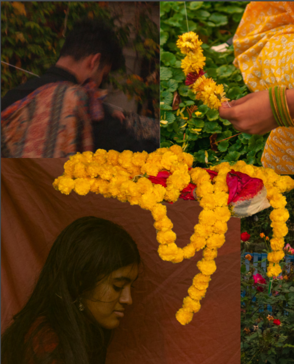
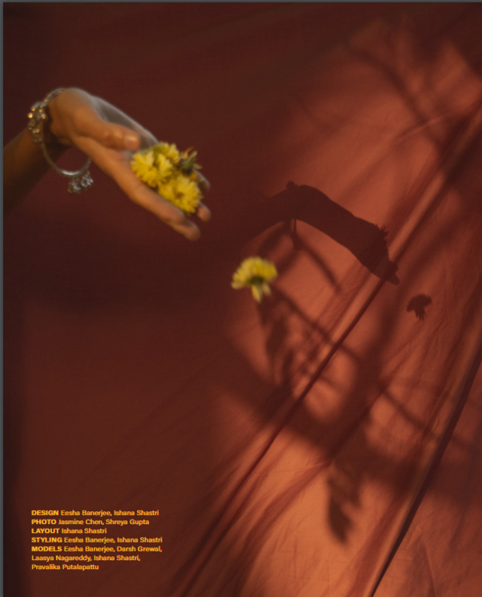